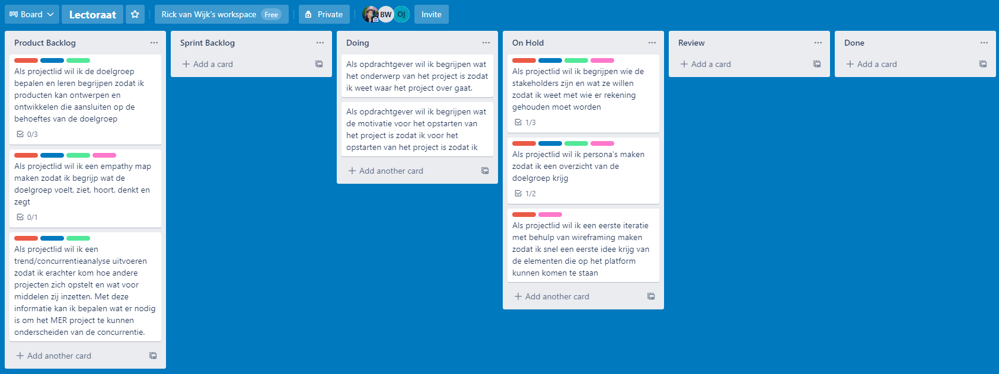

New assignment
Unfortunately the assignment of designing and
developing the running app had already been taken.
Luckily Olaf and Bernd-Jan came up with a new, challenging
assignment for me:
"How can we, the MER project, professionally present
ourselves and our work to stakeholders so that they
get informed and can use our research (products)?"
After having discussed what end products I would deliver, I
translated the assignment into the following
Design Challenge below 🡫
Design Challenge
Design and develop a platform on which project
info/data is provided and apply the designed
style
guide to the platform so that the PR objectives are
met and the stakeholders are informed about the
project.
I accepted the proposed assignment and thus after signing
some papers I officially became an IxD Lectorship intern.
My first week
In my first week of the internship there was a standup
meeting planned on Monday and Thursday. The
schedule remained like this throughout the internship.
In this week I setup a few things like writing a project
plan,
creating a scrum board
for planning and reading up on the project so that I knew in
what direction the project was headed and what stakeholders
were involved. Furthermore, I thought about what kind of
platform would be most suitable for the Design Challenge. I
decided a website would be the best platform to provide
stakeholders with info/data, because:
- Websites are very
accessible; websites can easily be shared through
links. A native app for example can't easily be
shared.
- Websites can contain a lot of information; the
stakeholders will most likely be active on a desktop
screen which means there's a lot of space available
to provide information (in the right way). This is
useful since a lot of research output will have to
be provided. Apps made for mobile devices have a lot
less space to work with since mobile devices are
significantly smaller.
- Websites are easy to maintain since there's a lot of
support (documentation, tools & communities)
available. Native or hybrid apps can be tricky to
maintain because of certain exclusive native
features and subscriptions.
Trends
After deciding the platform was going to be a
website I started looking for inspiration
from
innovative projects/businesses with regard
to human vitality that used
a website as platform.
The websites I took inspiration from are:
- Arion;
Arion offers innovative running
wearables and
software.
Their
main goal is to sell their products. Arion showcases
their products on their home/landing page but they also
tell a lot about themselves as a brand.
- Data
Enabled Running;
Just like the MER project, Data Enabled
Running is an innovative project run by
a knowledge
institution (TUE) within the field of
Human Vitality. Their goal is to
spread their research information. What's interesting is
that their website is a one pager and they link their
research to external websites. This might be because
it's easier to spread their research by posting their
research onto known research platforms.
- Alphabeats;
Alphabeats offers innovative software.
They sell neurofeedback technology that
reduces stress.
Their
main goal is to sell their products. Alphabeats has a
lot of 'Call To Action' elements on their website. They
are clearly trying to activate the user to engage with
their products. On the home/landing page they clearly
want to shift the user's attention to their products.
- DeX;
DeX is a platform made by Fontys ICT
software students. On this platform
students can upload their projects so
that other can use these resources and
can take inspiration from them. Their
goal is dissemination of projects. What's interesting
and possibly useful to the MER website is
that they have a research card for each project that's
posted on the website and that the user can filter them.
Observations
I noticed that pretty much all of these
websites had a video as hero view
background. I also noticed that most of the websites had a
lot of different sections that were distinguishable by their
difference in background colours.
Project Plan
I created a project
plan. The purpose of this project plan was to write
down what the assignment entailed from my point of view so
that I could get feedback from my internship supervisors in
case my interpretation of the assignment wasn't exactly what
they had in mind. It also helped me make a schedule by
having to write down what the potential methods and products
I was most likely going to use/produce during the internship
and dividing these over the internship period.
Trello Scrum Board
In order to manage my assignment tasks better, I created a
personal scrum board with Trello. You can read more about
the scrum method in my project
plan.

Stakeholder Mapping
An important aspect of the assignment is getting to know the
stakeholders. For this reason I made a visualization where I
mapped all the direct and indirect stakeholders. During this
process I realized there were more parties involved than I
initially thought. The information was mainly gathered
through desktop research, but also by talking to Olaf en
Bernd-Jan who of course knew some of the stakeholders
already.
After Olaf and Bernd-Jan gave me feedback
on my first version of the chart I improved quite a few
things.
Check out all the iterations below.
Glossary
I created a glossary.
From
the very start the project members used jargon which made it
more difficult for me to understand what the project
entailed. For this reason I wrote down all the words I
didn't fully understand and after looking up and asking what
they meant I put the words and their definition in a table.
I also added what the relation to the project was so that
this glossary could potentially help new project members.